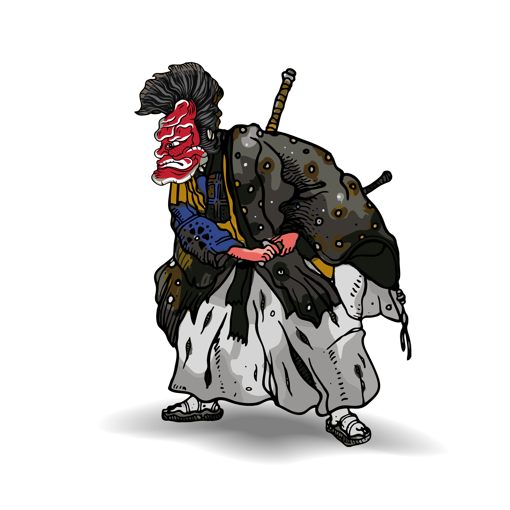
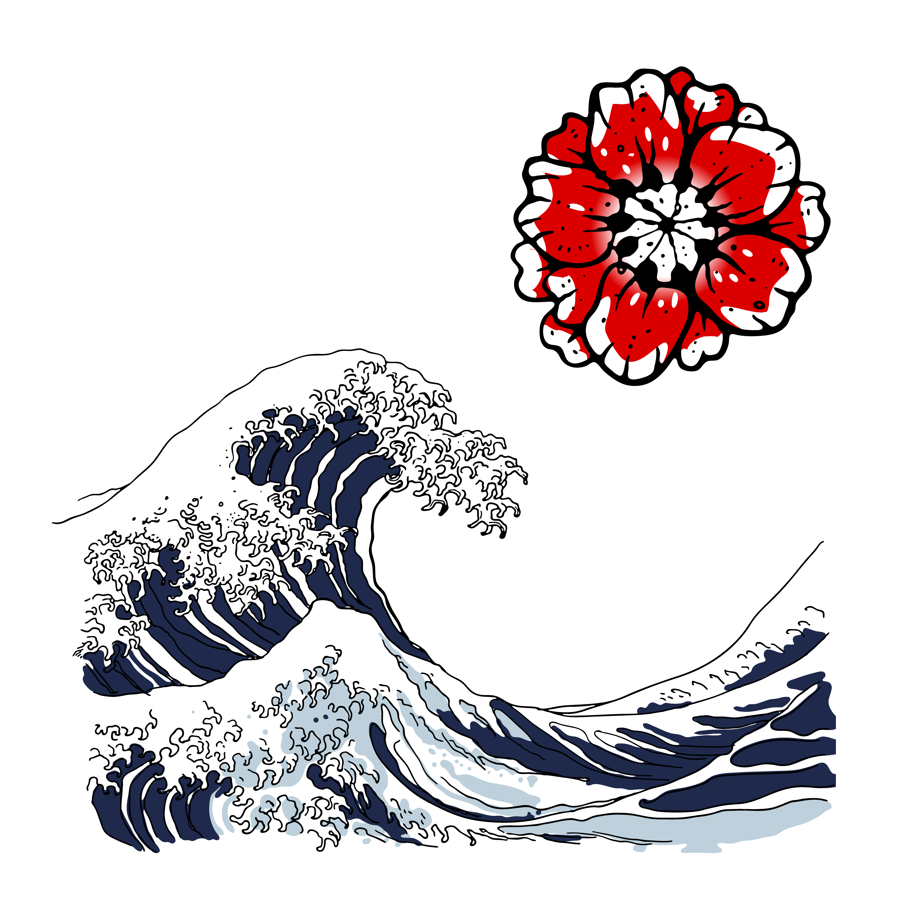
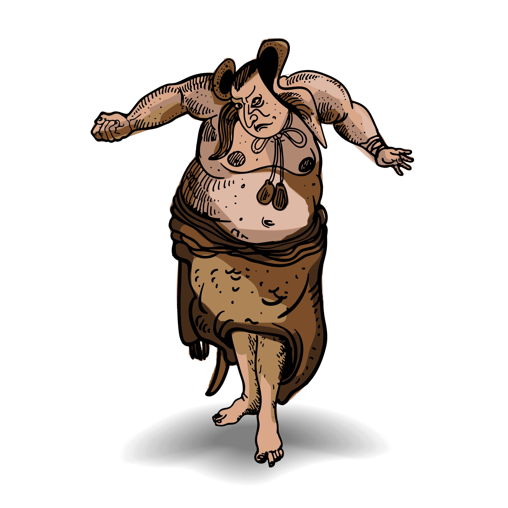
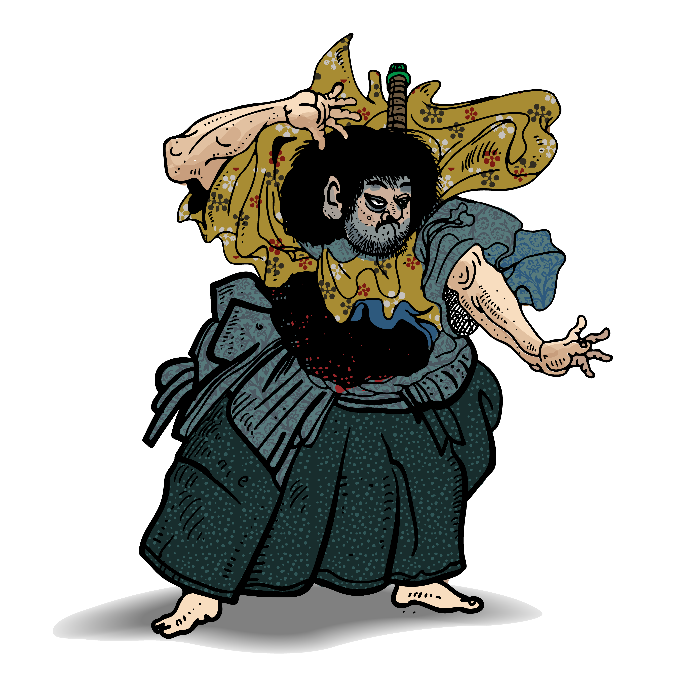

Handcrafted Browser Games & Practical Everyday Apps
Burnt Thumb Works is an independent game and software studio. We build 3D arcade racers, deep narrative RPGs, tactical pixel defense, and daily household tools—all engineered to run directly in modern web browsers with zero installation, zero tracking, and local storage persistence.

Playable Games
Original Games
3D arcade racing, tactical containment defense, and deterministic narrative survival—running self-contained in your browser with zero installs.
GrimmKart
Race 32 cursed tracks or do battle across 10 closed arenas in a 3D folklore kart racer. Steer 32 tale characters on custom folk carts and mounted beasts, drift around hairpins for mini-turbo boost sparks, draft leaders with 1.40x slipstream slingshots, and cast 16 enchanted items—from homing ravens to spindle traps. Includes a full 3D customizer turntable, 2-player split-screen, and serverless WebRTC online room codes.
Play GrimmKart
The Hook and the Skein
Set 6,500 years after the First Shearing in Low Vale beneath the Black Spine. A mobile-first narrative survival RPG of geography, debt, and lasting consequence. Build your traveler across working archetypes (Weaver, Drover, Scribe, Herder) and navigate dangerous old roads where local knowledge is your only armor. Balance vital Resolve, Grit, and Ledger debt in a fully deterministic client-side story engine with zero backend calls and no accounts.
Enter Low Vale
Scarward
A side-view 2D pixel tower-defense roguelite set in the Scar borderlands. Command a Joined-Hands containment circle and defend against surging Hooked Ones, pack handlers, and massive Vrakoni war-beasts. Balance defensive Spool wards and barriers against high-force Tension spells while managing a rising Power Strain meter and the creeping 0–100 Rust Dial. Features 18 persistent discipline ranks across two Order skill trees, in-run Attunement card draws, and an escalating 10-wave Deep Watch mode.
Play Scarward
Practical Tools
Everyday Apps
Focused, dependable browser utilities engineered to bring order, clarity, and peace of mind to gardens, kitchens, and daily routines.
Garden Sage
An evidence-based horticulture companion backed by USDA and University Cooperative Extension research (Cornell, UC Davis, Penn State, NC State). Select your USDA Hardiness Zone (Zones 5–9) to automatically calculate spring and fall frost dates, planting windows, and growth stages across custom beds, containers, and nursery trays. Includes the interactive Sage Advice diagnostic engine for diagnosing real crop ailments and deficiencies, plus a seasonal care scheduler, harvest ledger, and full academic citations.
Launch Garden Sage
Pantry Panda
A dual-philosophy kitchen inventory companion. Toggle seamlessly between "Shop Like a European" (48-hour fresh turnover, daily market stops, compact footprint, near-zero food waste) and "Shop Like a Prepper" (deep bulk buffer stock, 30-day calorie cushion, emergency staples rotation). Features category shelf tracking with dynamic fresh-status tags, a deterministic "What Can I Make?" recipe matcher that deducts used ingredients with one tap, text receipt import, and automated shopping list partner dispatch.
Launch Pantry Panda